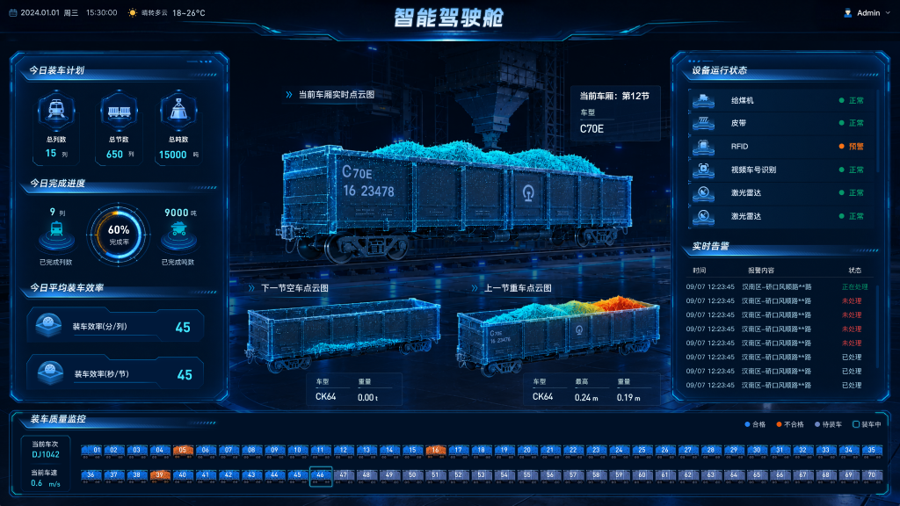

SELECTED WORK 01 / INDUSTRIAL SYSTEM
火车智能
装车系统.
面向装车站作业场景，整合装车计划、车辆识别、实时监控与质量追溯，通过管理后台与可视化驾驶舱呈现作业进度和异常信息。
设计范围
业务梳理与高保真原型 · 交互与 UI · 可视化及数字孪生设计
数字孪生场景与视角切换内容将在后续补充。
作业计划→车辆识别→实时监控→质量追溯
01
VISUAL MONITORING
从全站概况，到当前车厢。
用不同的信息尺度组织监控：大屏呈现全站作业概况，驾驶舱聚焦当前车辆、设备状态与装载质量。
02
OPERATION & RECOGNITION
让计划可管理，让识别有依据。
计划界面集中展示作业状态与关键指标；识别详情通过统计、车厢明细和图像证据，建立逐层查看的信息结构。
A CLOSER LOOK从识别结果，
从识别结果，
追溯到现场证据。
基础信息、识别统计、车辆明细与视频图片分组呈现，让数据与证据在同一个查看路径中相互对应。
01 总体识别情况
02 单节车厢明细
03 视频与图像证据
03
QUALITY TRACEABILITY
把装载数据，变成直观的质量信息。
从装车记录深入单节车厢，通过空车与重车模型对比，结合重量、料面与偏载数据呈现装载情况。
04
ALERTS & CONFIGURATION
看见异常，也看清触发规则。
实时报警集中呈现异常动态、趋势与对象分布；规则配置将阈值、持续时长、通知人员和对象覆盖分组组织。
CONFIGURATION DETAILS复杂配置，
复杂配置，
按规则分组展开。
区分告警与预警，以相同结构配置上下限、持续时长和描述，并在对象层面保留独立阈值。
01 告警与预警分组
02 描述变量与预览
03 通知人员与对象覆盖
THANK YOU FOR WATCHING